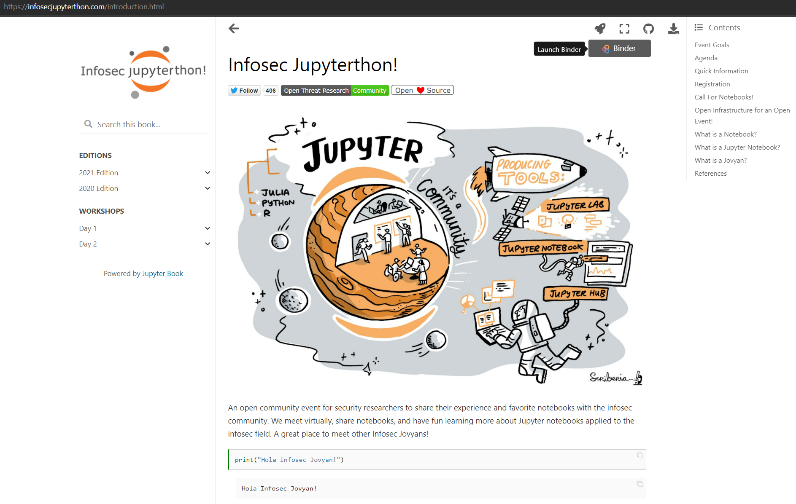

Workshop 1.1: Jupyter Notebooks Introduction
Contents

Workshop 1.1: Jupyter Notebooks Introduction#
Contributors:
Roberto Rodriguez (@Cyb3rWard0g)
Jose Rodriguez (@Cyb3rPandah)
Agenda:
Notebook: https://aka.ms/Jupyterthon-ws-1-1
License: Creative Commons Attribution-ShareAlike 4.0 International
Getting up to speed…#
Getting up to speed…#
What is Interactive Computing?#
An Interactive computation is a persistent computer program that runs with a “human in the loop” where the primary mode of steering the program is through the human iteratively writing/running blocks of code and looking at the result.
Reference:https://www.youtube.com/watch?v=YKmJvHjTGAM&list=PL055Epbe6d5aP6Ru42r7hk68GTSaclYgi&index=29
Interactivity as a Protocol#
Read-Evaluate-Print Loop (REPL):
Takes a single user’s inputs
Evaluates them
Returns the result to the user
A two-process model based on a kernel-client infrastructure
Kernel: Executes code
Client: Reads input and present output
IPython#
Released on Dec 10, 2001 by Fernando Perez while he was a graduate student at the University of Colorado
IPython as we know it today grew out of the following three projects:
ipython by Fernando Pérez.
IPP by Janko Hauser.
LazyPython by Nathan Gray.
Reference: https://ipython.readthedocs.io/en/stable/about/history.html
 Reference: https://ipython.readthedocs.io/en/stable/interactive/python-ipython-diff.html
Reference: https://ipython.readthedocs.io/en/stable/interactive/python-ipython-diff.html
Fernando Perez Inspiration#
Research with open tools for access and collaboration
Validated in SciPy India 2010 - Workshop to include students from underprivileged colleges in rural India.
Scientific
Business of science is to understand nature
Science is about opening up the black boxes nature
Community!
SciPy: Scientists collaborating and building better tools together!
Less competitions and more collaboration!
reference: https://www.youtube.com/watch?v=xuNj5paMuow&list=PL055Epbe6d5aP6Ru42r7hk68GTSaclYgi
IPython -> Jupyter Project#


Reference: https://speakerdeck.com/fperez/project-jupyter?slide=5

Reference: https://speakerdeck.com/fperez/project-jupyter?slide=5
What are Jupyter Notebooks?#
The Jupyter Notebook is an open-source web application that allows you to create and share documents that contain live code, equations, visualizations and narrative text. The Jupyter notebook combines two components:
A web application: a browser-based tool for interactive authoring of documents which combine explanatory text, mathematics, computations and their rich media output.
Notebook documents: a representation of all content visible in the web application, including inputs and outputs of the computations, explanatory text, mathematics, images, and rich media representations of objects.
Uses include:
Data cleaning and transformation
Statistical modeling
Data visualization
Machine learning, and much more
reference: https://jupyter.org/
Architecture (Interactive Protocol)#

Installing Jupyter Notebooks (Manually)#
Prerequisite: Python
While Jupyter runs code in many programming languages, Python is a requirement (Python 3.3 or greater, or Python 2.7) for installing the JupyterLab or the classic Jupyter Notebook.
Classic Jupyter Notebook#
Using Mamba or Conda
mamba install -c conda-forge notebook
conda install -c conda-forge notebook
Using PIP
pip install notebook
Once Jupyter Notebook is installed, you can run it with the following command:
jupyter notebook
Installing Jupyter Notebooks (Manually)#
Prerequisite: Python
While Jupyter runs code in many programming languages, Python is a requirement (Python 3.3 or greater, or Python 2.7) for installing the JupyterLab or the classic Jupyter Notebook.
JupyterLab#
Using Mamba or Conda
mamba install -c conda-forge jupyterlab
conda install -c conda-forge jupyterlab
Using PIP
pip install jupyterlab
Once JupyterLab is installed, you can run it with the following command:
jupyter-lab
from IPython.display import YouTubeVideo
YouTubeVideo('KcoYnFVw9Xs', width=1000, height=800)
Installing Jupyter Notebooks (Docker CE)#
Prerequisite: Docker CE
You just have to install the community edition of Docker, so that you can install JupyterLab from Docker images containing Jupyter applications and interactive computing tools. You can use a docker stack image to do any of the following (and more):
Start a personal Jupyter Notebook server in a local Docker container
Run JupyterLab servers for a team using JupyterHub
Write your own project Dockerfile
You can use ready-to-run Docker images maintained by the Jupyter team:
Jupyter Github Docker Stacks project: https://github.com/jupyter/docker-stacks
Jupyter Docker registry: https://hub.docker.com/u/jupyter
Jupyter Docker Base Image: https://hub.docker.com/r/jupyter/base-notebook/
Running the Jupyter Base Notebook#
docker run -p 8888:8888 jupyter/minimal-notebook:3b1f4f5e6cc1
from IPython.display import YouTubeVideo
YouTubeVideo('KVR1_cVlLRE', width=1000, height=800)
Jupyterthon - OTRF Docker Image#
docker run -ti --rm -p 8888:8888 otrf/jupyterthon:2021
Jupyter Hub#
JupyterHub is a set of processes that together provide a single user Jupyter Notebook server for each person in a group. Three major subsystems are started by the jupyterhub command line program:
Hub (Python/Tornado): manages user accounts, authentication, and coordinates Single User Notebook Servers using a Spawner.
Proxy: the public facing part of JupyterHub that uses a dynamic proxy to route HTTP requests to the Hub and Single User Notebook Servers. configurable http proxy (node-http-proxy) is the default proxy. Single-User Notebook Server (Python/Tornado): a dedicated, single-user, Jupyter Notebook server is started for each user on the system when the user logs in. The object that starts the single-user notebook servers is called a Spawner.
Reference: https://jupyterhub.readthedocs.io/en/latest/reference/technical-overview.html

Enter Binder Project#
Released in May, 2016
Updated 2.0 on November, 2019
The Binder Project is an open community that makes it possible to create shareable, interactive, reproducible environments.
The main technical product that the community creates is called BinderHub, and one deployment of a BinderHub exists at mybinder.org.
Who is it for?:
Researchers, Educators, people analyzing data and people trying to communicate the data analysis to others!!
BinderHub#
BinderHub connects several services together to provide on-the-fly creation and registry of Docker images. It utilizes the following tools:
A cloud provider such Google Cloud, Microsoft Azure, Amazon EC2, and others
Kubernetes to manage resources on the cloud
Helm to configure and control Kubernetes
Docker to use containers that standardize computing environments
A BinderHub UI that users can access to specify Git repos they want built
BinderHub to generate Docker images using the URL of a Git repository
A Docker registry (such as gcr.io) that hosts container images
JupyterHub to deploy temporary containers for users
BinderHub Flow#

Let’s Try it!#

JupyterLab Desktop App#
Released in September 2021.
Cross-platform standalone application distribution of JupyterLab.
Desktop app which bundles a Python environment (bundled conda Python env) with popular Python libraries (Numpy, scipy, pandas, ipywidgets and matplotlib).
Based on Electron with a front-end of JupyterLab inside an embedded browser.
from IPython.display import YouTubeVideo
YouTubeVideo('1g1c81YTONo', width=1000, height=800)
Classic Jupyter Notebook#
docker run -ti --rm -p 8888:8888 otrf/jupyterthon:2021
JupyterLab#
docker run -ti --rm -e JUPYTER_ENABLE_LAB=yes -p 8888:8888 otrf/jupyterthon:2021
VSCode Jupyter Notebook#
Visual Studio Code
Python Extension for Visual Studio Code
Python Interpreter: you can find the steps to install it here.
References:
https://blog.openthreatresearch.com/first_jupyter_notebook_vscode
https://blog.openthreatresearch.com/installing_python_extension_vscode
from IPython.display import YouTubeVideo
YouTubeVideo('4LrBMHL69VI', width=1000, height=800)
Resources#
https://the-turing-way.netlify.app/introduction/introduction.html
https://mail.python.org/pipermail/python-list/2001-December/093408.html
https://blog.jupyter.org/rendering-notebooks-on-github-f7ac8736d686
https://blog.jupyter.org/binder-2-0-a-tech-guide-2017-fd40515a3a84
https://jupyterlab.readthedocs.io/en/stable/getting_started/installation.html#pip
https://blog.jupyter.org/jupyterlite-jupyter-️-webassembly-️-python-f6e2e41ab3fa
https://blog.jupyter.org/jupyterlab-desktop-app-now-available-b8b661b17e9a
https://elifesciences.org/labs/a7d53a88/toward-publishing-reproducible-computation-with-binder
Break: 5 Minutes#